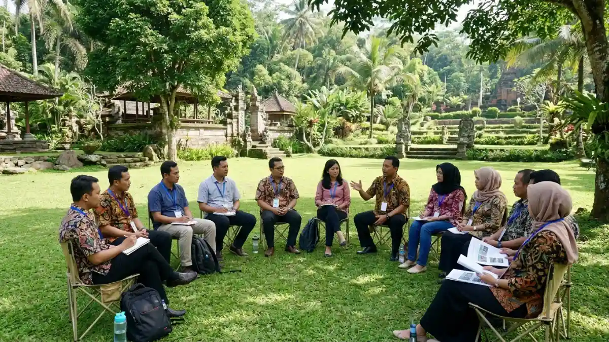
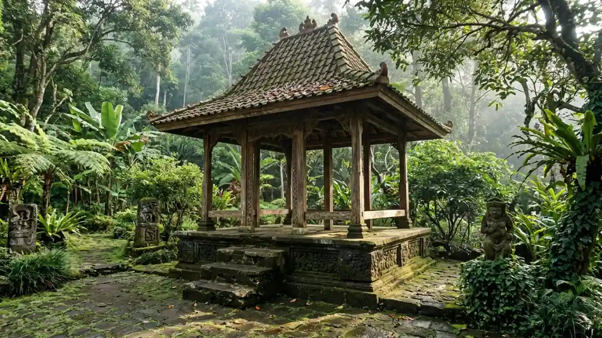

Ilustrasi karyawan perusahaan yang sedang berkumpul dan mengikuti sesi corporate training di area luar ruang Lembah Tumpang.Corporate training daerah Lembah Tumpang adalah pelatihan karyawan yang digelar di kawasan resor Lembah Tumpang, Kecamatan Tumpang, Malang, untuk membangun kompetensi dan kekompakan tim.
- Lembah Tumpang berada di Desa Slamet, Kecamatan Tumpang, Kabupaten Malang, di kawasan lembah dekat sungai.
- Resor ini dilaporkan media wisata memiliki area outbound, gazebo, kolam renang, musala, toilet, dan lahan parkir luas.
- Pelatihan di luar kantor cocok untuk topik kerja sama tim, komunikasi, kepemimpinan, dan penyegaran motivasi.
- Keberhasilan program ditentukan oleh tujuan yang jelas, kurikulum yang terukur, fasilitator kompeten, dan evaluasi setelah acara.
- Detail fasilitas, kapasitas, dan tarif sebaiknya selalu dikonfirmasi langsung ke pengelola sebelum reservasi.
- Apa Itu Corporate Training Daerah Lembah Tumpang?
- Di Mana Lokasi Lembah Tumpang dan Seberapa Mudah Dijangkau?
- Mengapa Perusahaan Memilih Corporate Training di Lembah Tumpang?
- Bagaimana Cara Kerja Program Corporate Training di Lembah Tumpang?
- Jenis Program Apa yang Cocok Dijalankan di Lembah Tumpang?
- Faktor Apa yang Perlu Dipertimbangkan Sebelum Memilih Lokasi dan Vendor?
- Bagaimana Perbandingan Training di Kantor dengan Training di Lembah Tumpang?
- Apa Saja Kesalahan Umum dalam Menyelenggarakan Corporate Training?
- Bagaimana Tips Agar Corporate Training di Lembah Tumpang Efektif?
- Kesimpulan
- FAQ
Apa Itu Corporate Training Daerah Lembah Tumpang?
Corporate training di Lembah Tumpang adalah pelatihan terstruktur bagi karyawan perusahaan yang memanfaatkan fasilitas resor di Desa Slamet, Tumpang, termasuk area outbound dan gazebo.
Corporate training secara umum berarti program pembelajaran yang dirancang perusahaan atau instansi untuk meningkatkan kemampuan karyawan.
Bentuknya beragam, mulai dari pelatihan keterampilan teknis, pelatihan kepemimpinan, hingga kegiatan team building.
Ketika program tersebut dijalankan di Lembah Tumpang, perusahaan memindahkan proses belajar dari ruang rapat ke lingkungan alam terbuka.
Pelatihan tersebut dirancang khusus untuk para profesional di bidang sumber daya manusia, manajer, kepala divisi, serta pimpinan lembaga yang berkeinginan agar tim mereka memperoleh pembelajaran melalui pengalaman praktis secara langsung.
Program ini lazim dipakai saat ada tim baru, saat pergantian kepemimpinan, menjelang target besar, atau setelah periode kerja yang melelahkan.
Manfaat utamanya adalah suasana yang berbeda dari rutinitas kantor. Peserta lebih santai, lebih mudah berinteraksi lintas divisi, dan lebih terbuka menerima materi.
Batasannya juga perlu dipahami: kegiatan di alam terbuka bergantung pada cuaca, kondisi fisik peserta, dan kualitas fasilitator. Karena itu, perencanaan matang lebih penting daripada sekadar memilih lokasi yang menarik.
Di Mana Lokasi Lembah Tumpang dan Seberapa Mudah Dijangkau?
Lembah Tumpang berlokasi di Desa Slamet, Kecamatan Tumpang, Kabupaten Malang, Jawa Timur, di kawasan lembah yang berdampingan dengan sungai, sehingga suasananya sejuk dan jauh dari keramaian kota.
Kecamatan Tumpang berada di sisi timur wilayah Malang dan berbatasan dengan Kota Malang bagian timur. Berdasarkan keputusan KPU Kabupaten Malang tentang pemutakhiran data pemilih berkelanjutan triwulan I 2026 (posisi 1 April 2026), Kecamatan Tumpang memiliki 63.174 pemilih.
Pada Mei 2026, Kepala UPT Puskesmas Tumpang menyebut jumlah penduduk kecamatan ini sekitar 80 ribu jiwa. Statistik tersebut mengindikasikan bahwa Tumpang merupakan kawasan dengan populasi yang signifikan dan dilengkapi dengan fasilitas dasar yang terus mengalami peningkatan.
Menurut artikel Popbela, rute menuju Lembah Tumpang dari jalan utama kecamatan relatif singkat, yaitu sekitar 400 meter.
Perusahaan yang menyelenggarakan perjalanan rombongan pada umumnya mempertimbangkan durasi perjalanan dari Kota Malang, ketersediaan armada bus atau elf, serta situasi lalu lintas pada waktu keberangkatan yang telah ditentukan.
Disarankan melakukan survei lokasi atau menghubungi pengelola untuk memastikan akses kendaraan besar.
Mengapa Perusahaan Memilih Corporate Training di Lembah Tumpang?
Perusahaan memilih corporate training di Lembah Tumpang karena lokasinya tenang, fasilitas wisata dan outbound tersedia dalam satu kawasan, dan suasana alamnya mendukung peserta belajar dengan rileks.
Pertama, ada faktor lingkungan. Resor di kawasan lembah dekat sungai menawarkan udara sejuk dan ruang terbuka yang jarang ditemukan di dalam kota. Kedua, ada faktor kelengkapan.
Laporan media wisata menyebut Lembah Tumpang memiliki gazebo, beberapa kolam renang, musala, toilet di berbagai titik, area parkir luas, dan lahan outbound.
Fasilitas dasar ini memudahkan penyelenggara menyusun rundown satu hari penuh atau menginap.

Ilustrasi gazebo di Lembah Tumpang yang sering dimanfaatkan untuk sesi materi, diskusi, dan istirahat selama acara corporate training berlangsung.Ketiga, ada kebutuhan pengembangan SDM yang nyata. Menurut data statistik Pembelajaran dan Pengembangan tahun 2026 yang merujuk pada Laporan Pembelajaran Tempat Kerja LinkedIn, sebanyak 91 persen para profesional di bidang pembelajaran menyetujui bahwa keterampilan kemanusiaan (human skills) memiliki signifikansi yang terus meningkat dalam lingkungan kerja.
Keterampilan seperti komunikasi, kolaborasi, dan empati sulit dilatih hanya lewat slide presentasi. Aktivitas kelompok di alam terbuka memberi peserta kesempatan mempraktikkannya secara langsung.
Keempat, ada faktor kedekatan dengan wilayah Malang Raya. Perusahaan dan instansi di Kota Malang, Kabupaten Malang, hingga Pasuruan dapat menjangkau Tumpang tanpa perjalanan jauh. Hal ini menekan biaya transportasi dibanding lokasi pelatihan di luar kota.
Bagaimana Cara Kerja Program Corporate Training di Lembah Tumpang?
Program corporate training di Lembah Tumpang berjalan dalam lima tahap: analisis kebutuhan, perancangan program, persiapan lokasi, pelaksanaan kegiatan, dan evaluasi hasil bagi peserta serta perusahaan.
Tahap pertama adalah analisis kebutuhan. Departemen Sumber Daya Manusia mengidentifikasi permasalahan yang perlu ditangani, seperti halnya komunikasi lintas departemen yang tidak optimal atau penurunan semangat kerja tim.
Tahap kedua adalah perancangan program. Fasilitator menyusun materi, permainan, dan sesi refleksi yang menjawab masalah tersebut, lalu menyesuaikannya dengan jumlah dan profil peserta.
Tahap ketiga adalah persiapan lokasi. Penyelenggara melakukan pemeriksaan menyeluruh terhadap ketersediaan area outbound, gazebo atau ruang diskusi, konsumsi, perlengkapan keselamatan, serta rencana cadangan dalam situasi cuaca hujan.
Tahap keempat adalah pelaksanaan. Kegiatan umumnya dimulai dengan pembukaan dan pengarahan keselamatan, dilanjutkan sesi aktivitas, lalu diskusi refleksi yang menghubungkan pengalaman dengan situasi kerja.
Tahap kelima adalah evaluasi. Perusahaan mengumpulkan umpan balik peserta, mengamati perubahan perilaku tim dalam beberapa minggu, dan menetapkan tindak lanjut. Tanpa evaluasi, pelatihan berisiko hanya menjadi acara rekreasi yang cepat terlupakan.
Jenis Program Apa yang Cocok Dijalankan di Lembah Tumpang?
Jenis program yang cocok dijalankan di Lembah Tumpang mencakup outbound team building, pelatihan kepemimpinan, penyegaran motivasi, kegiatan gathering, dan workshop soft skills yang memanfaatkan ruang terbuka serta gazebo.
Tim outbound team building mengutamakan kolaborasi melalui aktivitas permainan kelompok dan tantangan yang dilakukan secara bersama-sama. Pelatihan kepemimpinan menggabungkan simulasi pengambilan keputusan dengan sesi diskusi.
Penyegaran motivasi cocok untuk tim yang baru menyelesaikan proyek berat. Acara gathering menekankan pentingnya membangun keakraban dan hubungan baik antar divisi, sementara workshop pengembangan soft skills membahas topik-topik penting seperti komunikasi efektif, manajemen konflik, dan pelayanan pelanggan yang berkualitas.
Perusahaan juga dapat menggabungkan beberapa jenis program. Contohnya, pagi hari diisi materi di gazebo, siang hari diisi aktivitas outbound, dan sore hari ditutup refleksi. Kombinasi pendekatan ini memfasilitasi pemahaman konseptual peserta sebelum mereka melaksanakan praktik langsung.
Faktor Apa yang Perlu Dipertimbangkan Sebelum Memilih Lokasi dan Vendor?
Pertimbangan pokok dalam menentukan lokasi dan penyedia layanan pelatihan korporat mencakup objektif pembelajaran, kapasitas peserta, infrastruktur pendukung, standar keselamatan kerja, kualifikasi profesional fasilitator, alokasi dana, serta kemampuan penyesuaian waktu pelaksanaan apabila terdapat perubahan kondisi meteorologi.
- Tujuan pelatihan: tentukan hasil yang diharapkan, bukan hanya jenis kegiatan.
- Jumlah dan profil peserta: usia, kondisi fisik, dan komposisi divisi memengaruhi pilihan aktivitas.
- Fasilitas: periksa ruang diskusi, toilet, musala, parkir, konsumsi, dan opsi menginap.
- Keselamatan: pastikan ada prosedur keselamatan, perlengkapan, dan penanganan darurat.
- Fasilitator: nilai pengalaman, metode, dan kemampuan memandu refleksi.
- Anggaran: bandingkan komponen biaya secara transparan dan tanyakan apa yang belum termasuk.
- Rencana cadangan: tanyakan solusi bila hujan atau peserta berhalangan.
Biaya corporate training dapat bervariasi tergantung jumlah peserta, durasi, fasilitas, dan format program. Karena itu, minta penawaran tertulis dengan rincian lengkap sebelum mengambil keputusan.
Bagaimana Perbandingan Training di Kantor dengan Training di Lembah Tumpang?
Training di kantor lebih praktis dan hemat waktu, sedangkan training di Lembah Tumpang menawarkan suasana berbeda, interaksi lebih cair, dan pengalaman langsung, tetapi memerlukan perencanaan logistik lebih besar.
Training di kantor unggul pada sisi kemudahan. Peserta tidak perlu bepergian, biaya transportasi nihil, dan jadwal mudah disesuaikan. Namun, peserta sering terdistraksi pekerjaan harian dan suasana formal dapat membuat diskusi kurang terbuka.
Training di Lembah Tumpang unggul pada sisi pengalaman. Peserta berada jauh dari meja kerja, sehingga fokus lebih terjaga dan hubungan antarkaryawan lebih mudah terbentuk.
Kekurangannya adalah perlunya transportasi, koordinasi konsumsi, dan mitigasi risiko cuaca. Pilihan terbaik bergantung pada tujuan: materi teknis singkat cocok di kantor, sedangkan penguatan tim dan budaya kerja lebih cocok di luar kantor.
Apa Saja Kesalahan Umum dalam Menyelenggarakan Corporate Training?
Kesalahan umum corporate training meliputi tidak menetapkan tujuan terukur, memilih aktivitas hanya karena menyenangkan, mengabaikan keselamatan, tidak melakukan sesi refleksi, dan tidak mengevaluasi dampak setelah kegiatan selesai.
Kesalahan pertama adalah menganggap pelatihan sebagai hiburan semata. Tanpa tujuan terukur, hasilnya sulit dinilai.
Kesalahan kedua adalah tidak menyesuaikan aktivitas dengan kondisi peserta, sehingga sebagian karyawan merasa terpinggirkan. Kesalahan ketiga adalah mengabaikan prosedur keselamatan dan rencana cadangan cuaca.
Kesalahan keempat adalah melewatkan sesi refleksi. Padahal, refleksi adalah bagian yang menghubungkan permainan dengan pekerjaan sehari-hari.
Kesalahan kelima adalah tidak ada tindak lanjut. Pelatihan yang tidak diikuti rencana aksi biasanya kehilangan dampaknya dalam waktu singkat.
Bagaimana Tips Agar Corporate Training di Lembah Tumpang Efektif?
Agar corporate training di Lembah Tumpang efektif, tetapkan tujuan terukur, libatkan perwakilan peserta saat perancangan, sediakan sesi refleksi, perhatikan keselamatan, dan lakukan evaluasi dalam beberapa minggu setelah acara.
Mulailah dengan survei singkat kepada calon peserta untuk mengetahui kendala tim. Susun rundown yang seimbang antara aktivitas fisik, diskusi, dan waktu istirahat.
Komunikasikan informasi praktis jauh hari, seperti pakaian, perlengkapan pribadi, dan jadwal keberangkatan.
Tunjuk satu penanggung jawab internal yang menghubungi pengelola dan fasilitator. Pastikan kondisi kesehatan peserta diperhatikan, terutama untuk aktivitas fisik.
Setelah acara, kumpulkan umpan balik dan tetapkan satu sampai tiga tindakan nyata yang dijalankan tim dalam bulan berikutnya.
Kesimpulan
Corporate training daerah Lembah Tumpang efektif bila dimulai dari tujuan yang jelas, dijalankan fasilitator kompeten, memperhatikan keselamatan, dan diakhiri evaluasi.
Konfirmasikan fasilitas, kapasitas, dan tarif langsung ke pengelola sebelum reservasi, lalu pelajari tiga panduan pendukung untuk memilih vendor, merancang outbound, dan menyusun anggaran.
FAQ (Pertanyaan yang Sering Diajukan)